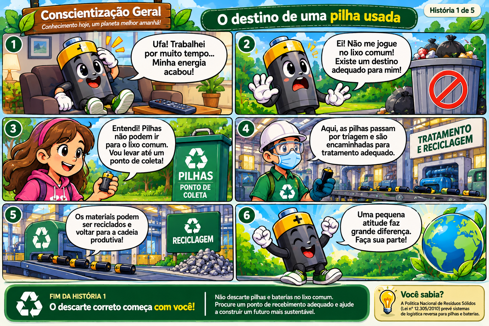

A natureza precisa de escolhas conscientes.
Descubra como o descarte correto de pilhas e baterias
pode contribuir para um mundo mais saudável.
✦
Como você prefere aprender?
01📖
CONHECIMENTO APROFUNDADO
Leitura completa
Entenda a ciência por trás das pilhas
e baterias, os impactos ambientais,
a legislação e as melhores formas
de descarte.
✓ Conteúdo detalhado✓ Informações educativas
02🎨
APRENDIZAGEM ILUSTRADA
Leitura visual
Descubra o descarte correto com
histórias ilustradas, personagens
e explicações simples para aprender
de maneira divertida.
✓ Histórias ilustradas✓ Leitura simplificada
Aprenda sobre o descarte correto
As pilhas e baterias fazem parte do nosso cotidiano.
Estão presentes em controles remotos, brinquedos,
celulares, computadores e diversos equipamentos.
Porém, quando chegam ao fim da vida útil, precisam
receber uma destinação adequada.
O que existe dentro das pilhas e baterias?
Pilhas e baterias são dispositivos eletroquímicos.
Isso significa que transformam energia química em
energia elétrica, permitindo o funcionamento de
diversos aparelhos.
Sua composição varia de acordo com o tipo e a finalidade.
Existem diferentes tecnologias, como pilhas alcalinas,
pilhas de zinco-carbono, baterias de chumbo-ácido,
níquel-cádmio e baterias de íons de lítio.
Algumas dessas tecnologias podem conter substâncias
e metais que exigem cuidados especiais, como chumbo,
cádmio e mercúrio.
Por que precisamos ter cuidado?
Quando pilhas e baterias são descartadas de maneira
inadequada, seus componentes podem representar riscos
ao meio ambiente, dependendo de sua composição e das
condições de descarte.
O descarte incorreto pode contribuir para a contaminação
do solo e da água. Por isso, esses materiais devem ser
encaminhados para sistemas de coleta e destinação
ambientalmente adequada.
1. Por que o descarte incorreto é um problema?
Pilhas e baterias podem conter substâncias e materiais
que exigem cuidados especiais. Quando são descartadas
de maneira inadequada, podem contribuir para a
contaminação do solo e da água, além de oferecer riscos
durante o manuseio e o tratamento dos resíduos.
2. Quais são os impactos ambientais?
O descarte em locais inadequados pode permitir que
componentes desses produtos sejam liberados no ambiente.
Isso pode prejudicar os ecossistemas e afetar organismos
que dependem da qualidade do solo e da água.
3. Como realizar o descarte correto?
Quando uma pilha ou bateria deixar de funcionar,
não a coloque no lixo doméstico comum. Procure um
ponto de recebimento que aceite esse tipo de material.
Lojas, estabelecimentos comerciais e pontos específicos
de coleta podem oferecer esse serviço.
Não abra, quebre ou perfure pilhas e baterias.
Armazene os itens usados em local seco e seguro.
Evite deixar os materiais ao alcance de crianças.
Confira as orientações do ponto de coleta.
4. Onde encontrar pontos de coleta?
Você pode procurar informações em lojas de eletrônicos,
supermercados e serviços de coleta do seu município.
Antes de se deslocar, confirme se o estabelecimento
recebe o tipo de pilha ou bateria que você possui.
5. O que é logística reversa?
A logística reversa é um sistema que permite que produtos
utilizados retornem ao setor empresarial para receberem
reaproveitamento, reciclagem ou outra destinação
ambientalmente adequada.
No caso das pilhas e baterias, esse processo começa quando
o consumidor leva os materiais usados até um ponto de
recebimento apropriado. Depois, eles são armazenados e
encaminhados para etapas de coleta, triagem e tratamento.
Os materiais podem chegar a empresas especializadas em
reciclagem, onde os componentes que podem ser aproveitados
são recuperados. O que não puder ser reaproveitado deve
receber uma destinação final adequada.
6. Quem é responsável?
A logística reversa depende da participação de diferentes
setores da sociedade. Fabricantes, importadores,
distribuidores e comerciantes possuem responsabilidades
na estruturação dos sistemas de retorno dos produtos.
O consumidor também tem um papel importante: deve entregar
as pilhas e baterias usadas nos locais indicados pelo
sistema de coleta.
Essa responsabilidade compartilhada ajuda a reduzir os
impactos ambientais e incentiva o reaproveitamento de
materiais.
7. O que diz a legislação brasileira?
No Brasil, existem leis e normas que estabelecem
regras para o gerenciamento adequado dos resíduos
sólidos, incluindo pilhas e baterias.
Lei nº 12.305/2010 — Política Nacional de Resíduos Sólidos
Essa lei estabelece diretrizes para a gestão dos
resíduos sólidos no país e determina a responsabilidade
compartilhada pelo ciclo de vida dos produtos.
Seu artigo 33 determina que fabricantes, importadores,
distribuidores e comerciantes de pilhas e baterias
estruturem sistemas de logística reversa, permitindo
que esses produtos retornem após o uso pelo consumidor.
Resolução CONAMA nº 401/2008
Essa resolução estabelece limites para determinados
metais presentes em pilhas e baterias e critérios
para seu gerenciamento ambientalmente adequado.
A norma também apresenta regras relacionadas ao
recebimento, armazenamento, coleta e destinação
desses materiais, além de proibir formas inadequadas
de descarte.
8. De quem é a responsabilidade?
A legislação brasileira estabelece que a proteção
ambiental depende da participação de diferentes
setores da sociedade.
Consumidores: devem devolver as pilhas e baterias usadas aos pontos de recebimento adequados.
Comerciantes e distribuidores: participam dos sistemas de recebimento e encaminhamento dos produtos.
Fabricantes e importadores: possuem responsabilidades pela estruturação dos sistemas de logística reversa e pela destinação adequada dos materiais recebidos.
Poder público: participa da gestão dos resíduos e da fiscalização, conforme suas atribuições legais.
Essa divisão de responsabilidades demonstra que
o descarte correto não depende apenas de uma pessoa,
mas da colaboração entre consumidores, empresas
e poder público.
9. Pesquisas e dados ambientais
Para compreender melhor os impactos do descarte de
pilhas e baterias, também é importante consultar
pesquisas, levantamentos e informações divulgadas
por instituições oficiais.
SINIR — Sistema Nacional de Informações sobre a Gestão dos Resíduos Sólidos
O SINIR reúne informações sobre a gestão de resíduos
sólidos e os sistemas de logística reversa existentes
no Brasil. Por meio de seus relatórios, é possível
acompanhar informações sobre a coleta e a destinação
de diferentes tipos de resíduos.
IBAMA — Instituto Brasileiro do Meio Ambiente e dos Recursos Naturais Renováveis
O IBAMA disponibiliza conjuntos de dados relacionados
à reciclagem de pilhas e baterias. Essas informações
incluem tipos de materiais recebidos, quantidades,
pesos e dados sobre sua destinação.
Os dados permitem acompanhar os resultados dos sistemas
de logística reversa, compreender os desafios da
reciclagem e identificar a importância de melhorar
as práticas de gestão dos resíduos.
É importante observar o ano de referência, o tipo de
bateria analisado e a abrangência de cada levantamento.
Assim, evitamos interpretar números fora de seu contexto.
10. Você sabia? Curiosidades sobre pilhas e baterias
Nem todas possuem os mesmos componentes
Existem diferentes tecnologias de pilhas e baterias.
Algumas podem conter chumbo, cádmio ou mercúrio,
enquanto outras utilizam diferentes composições químicas.
Por isso, é importante conhecer o tipo de material
e seguir as orientações de descarte.
Baterias de lítio também precisam de descarte adequado
Mesmo quando não estão abrangidas por determinadas
exigências específicas da Resolução CONAMA nº 401/2008,
as baterias de lítio devem receber destinação
ambientalmente adequada.
A reciclagem pode recuperar componentes
A reciclagem é um processo que transforma resíduos
em materiais que podem servir como matéria-prima
para novos produtos ou processos produtivos,
respeitando as condições ambientais aplicáveis.
Faça parte da mudança!
O descarte responsável é uma atitude simples que
contribui para a proteção do meio ambiente.
Compartilhe essas informações e incentive outras
pessoas a fazerem o mesmo.
Teste seus conhecimentos! 🧠
Chegou a hora de descobrir o que você aprendeu.
Responda às quatro perguntas abaixo!
1. Onde devemos descartar pilhas usadas?
2. O que é logística reversa?
3. Todas as baterias possuem chumbo, cádmio e mercúrio?
4. Qual lei estabelece a Política Nacional de Resíduos Sólidos?
APRENDA DE OUTRA MANEIRA
Histórias para transformar atitudes
Conheça histórias, personagens e situações do cotidiano.
História 1 de 520%
HISTÓRIA 01
O destino de uma pilha usada
Uma pequena escolha pode evitar grandes problemas.

O descarte correto de pilhas começa com uma atitude simples:
procurar um ponto de coleta adequado.
Agora que você conheceu o destino de uma pilha usada, vamos descobrir o que existe dentro das baterias?